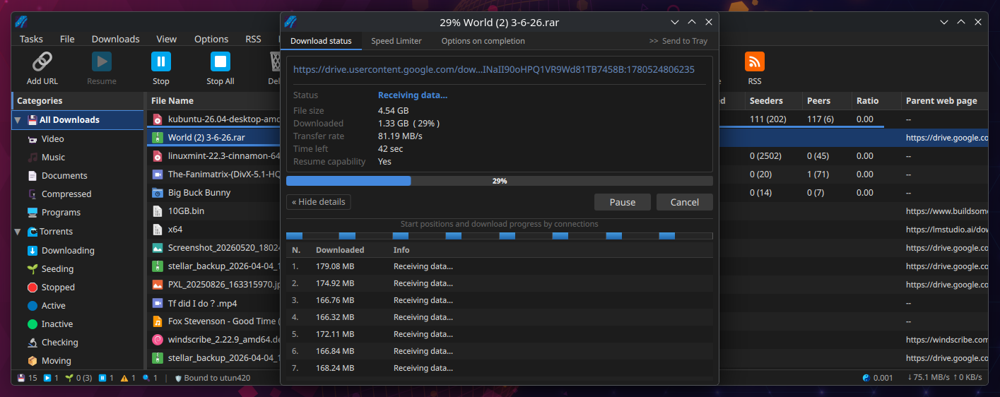
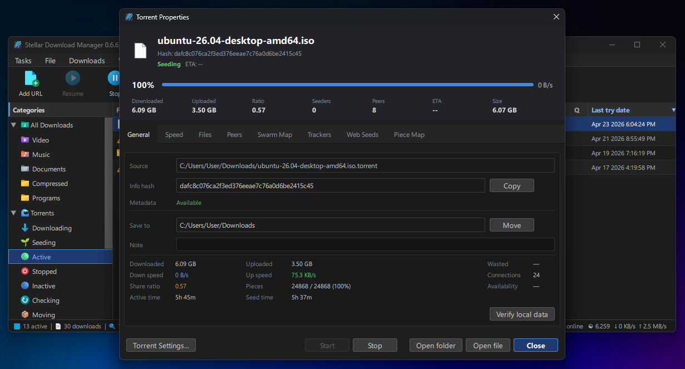
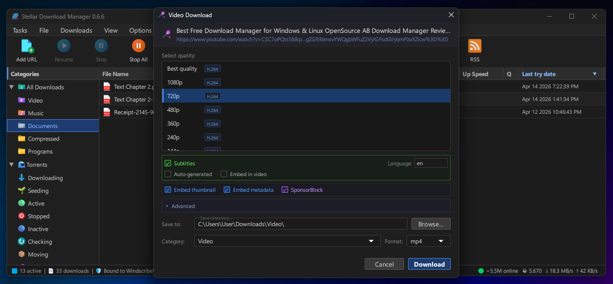
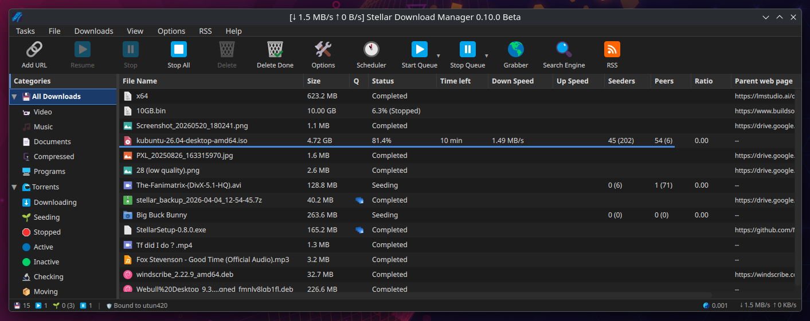
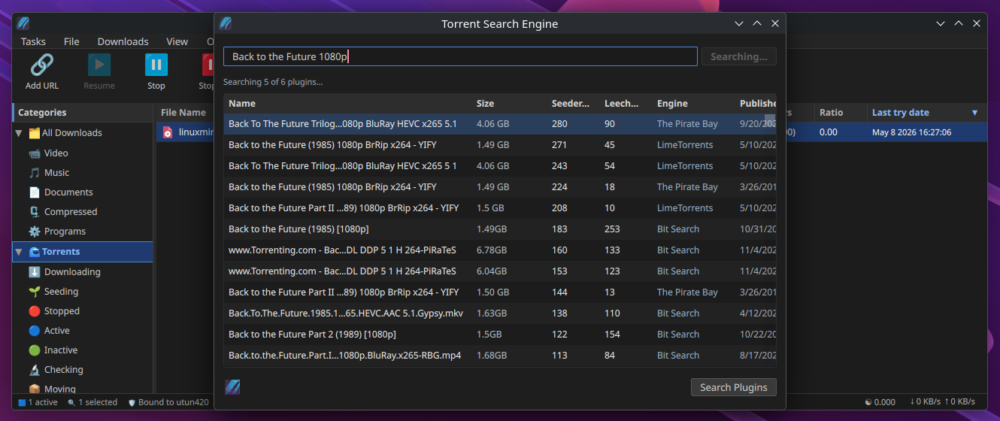
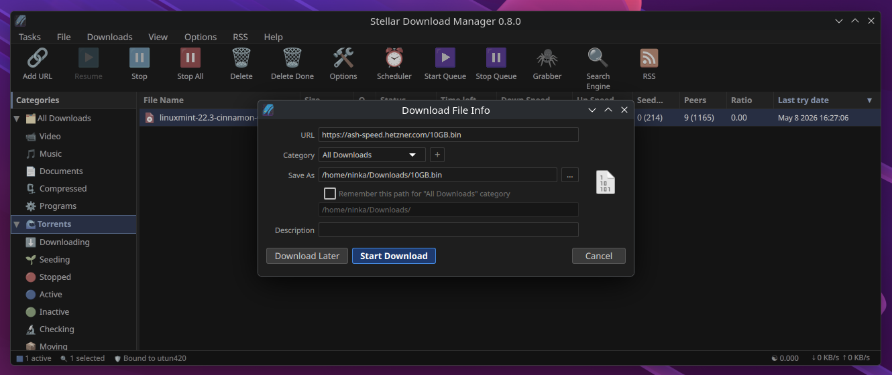
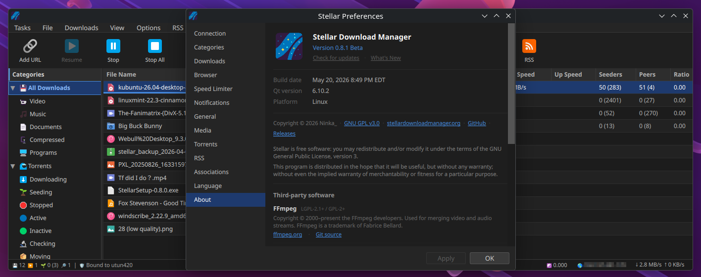

Stellar is a download manager for Windows and Linux. It has a powerful download engine built to recover from disruptions, handle large downloads with many connections at once, support torrents, and download from sites like YouTube and Twitter.
Built for large downloads and long-running transfers.
Stellar breaks files into segments and downloads them in parallel.
If one segment stalls or drops, only that segment is retried. The file is rebuilt from the completed parts when the transfer finishes.

Stellar is a full-featured torrent client.
That means you can manage direct downloads and torrents side by side instead of juggling a second client.
Queue torrents, ban peers by client or country, and inspect live piece and swarm maps while the transfer runs. You can even bind your VPN to it!

Choose a format, start the transfer, and the built-in video downloader handles the site-specific work, including cookie forwarding when needed.

Built with C++ and Qt
Clean, simple, and practical
Downloads, queues, categories, and torrent tools all stay in one place.

Search is built into the app.
You can search, browse, and start torrenting without ever leaving Stellar.
Supports the same search engine plugins as qBittorrent.

Install the Chrome or Firefox extension to have Stellar catch downloads from the browser, so you don't have to copy links around by hand.

Ships as a native .deb for Debian, Ubuntu, Mint, and KDE Neon, and an .rpm for Fedora, openSUSE, and RHEL-based distros.

Free and open source. Licensed under the GNU GPL v3.
github.com/Ninka-Rex/StellarBinaries are pulled from GitHub Releases.
| Platform | Package | Notes | |
|---|---|---|---|
| Windows 10 / 11 x64 | StellarSetup.exe |
Installer for Windows 10 / 11 | Download |
| Linux x64 .deb | Stellar.deb |
Debian, Ubuntu, Linux Mint, KDE Neon | Download |
| Linux x64 .rpm | Stellar.rpm |
Fedora, openSUSE, RHEL, AlmaLinux, Rocky Linux | Download |
| Source | .tar.gz |
Source code | Source |